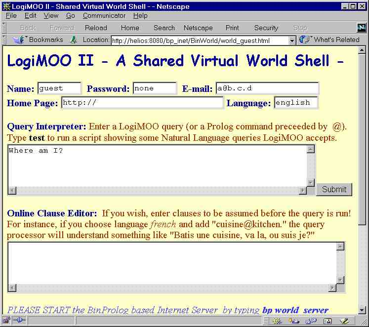

Documentation
based on a paper by
Paul
Tarau, Koen De Bosschere, Veronica Dahl and Stephen Rochefort,
published
in Journal of Logic Programming (March, 1999)
If you have the source distribution type:
bp world_server
otherwise (binary distribution - you can redistribute this to your customers as well) type
bpr world_server.wam
The server will listen on port 8888. Start your local LogiMOO client by opening with Netscape or explorer the link:
http://localhost:8888/<absolute path where the file is>/world_guest.html
To make your version of LogiMOO available on the Internet please edit in the file world_guest.html the line containing action="http://localhost:8888/nofile.pro" to reflect the location of your server's location i.e something like:
action="http://my_machine.my_domain.com:8888/nofile.pro"
The server will handle LogiMOO queries directly, WITHOUT requiring another Web Server. This is a completely self contained Web program as far as the server has a static, well known Web address.
If you wish, enter clauses to be assumed before the query is run in the lower window. For instance, if you choose language french and add "cuisine@kitchen." the query processor will understand something like "Batis une cuisine, va la, ou suis je?"
Language files (english.pl,
spanish.pl,
french.pl)
are
for now very basic, suggestions on improvements and files for other languages
are welcome, please send them to tarau@cs.unt.edu.For
now, output is english only - we plan to have multi-lingual output in the
near future. Please read the LogiMOO Online
User Guide for
more information.

The LogiMOO interface world_guest.htmlshown in the figure has a number of input windows. Make sure you fill them in with meaningful values. In particular, the make sure the Home Page field points to a place where files (*.html, *.gif, *.jpg, *.wrl) corresponding to the objects you build using the craft command, exists, and the files are indeed there.
The following trace shows the output of the trace command, and the Natural Language capabilites of the current version.
login=guest
e-mail=a@b.c.d
home=http://
<= test
login as: guest with password: none
your home is at http://
TEST: I am Paul.
login as: paul with password: none
your home is at http://
=> The query succeeded !
TEST: Dig an office, go there.
=> The query succeeded !
you are in the office
=> The query succeeded !
TEST: Go to the lobby. Look.
you are in the lobby
=> The query succeeded !
Ports from lobby :
Users at this place, lobby :
guest
paul
Objects at this place, lobby
=> The query succeeded !
TEST: I am the Wizard. Where am I?
login as: wizard with password: none
your home is at http://
=> The query succeeded !
you are in the lobby
=> The query succeeded !
TEST: I am Joe. Where am I?
login as: joe with password: none
your home is at http://
=> The query succeeded !
you are in the lobby
=> The query succeeded !
TEST: Craft a dog-gif. Give it to the Wizard!
=> The query succeeded !
'wizard:I give you dog.gif'
=> The query succeeded !
TEST: Craft a cat. Where is the cat? Who has it?
=> The query succeeded !
cat is in lobby
=> The query succeeded !
joe has cat
=> The query succeeded !
TEST: Dig the bedroom. Go there. Dig a kitchen, open a port south to the kitchen, go there, open a port north to the bedroom. Go there. Craft a song-au. Give it to the Wizard. Look.
=> The query succeeded !
you are in the bedroom
=> The query succeeded !
=> The query succeeded !
=> The query succeeded !
you are in the kitchen
=> The query succeeded !
=> The query succeeded !
you are in the bedroom
=> The query succeeded !
=> The query succeeded !
'wizard:I give you song.au'
=> The query succeeded !
Ports from bedroom :
south to kitchen
Users at this place, bedroom :
joe
Objects at this place, bedroom
cat
song.au
=> The query succeeded !
TEST: I am the Wizard. Where am I? Go to the kitchen. Look!
login as: wizard with password: none
your home is at http://
=> The query succeeded !
you are in the lobby
=> The query succeeded !
you are in the kitchen
=> The query succeeded !
Ports from kitchen :
north to bedroom
Users at this place, kitchen :
wizard
Objects at this place, kitchen
dog.gif
=> The query succeeded !
TEST: I am Joe. Craft a cat. Where is the cat?
login as: joe with password: none
your home is at http://
=> The query succeeded !
=> The query succeeded !
cat is in bedroom
=> The query succeeded !
TEST: Craft a Gnu. Who has it? Where is it? Where am I?
=> The query succeeded !
joe has gnu
=> The query succeeded !
gnu is in bedroom
=> The query succeeded !
you are in the bedroom
=> The query succeeded !
TEST: Give to the Wizard the Gnu that I crafted. Who has it?
'wizard:I give you gnu'
=> The query succeeded !
wizard has gnu
=> The query succeeded !
TEST: I am Mary.
login as: mary with password: none
your home is at http://
=> The query succeeded !
TEST: Say hi!
hi!
TEST: I am the Joe.
login as: joe with password: none
your home is at http://
=> The query succeeded !
TEST: Say hi!
hi!
TEST: Craft a grammar.
=> The query succeeded !
TEST: Look. Give the grammar that I crafted
to Mary.
Ports from bedroom :
south to kitchen
Users at this place, bedroom :
joe
Objects at this place, bedroom
cat
song.au
gnu
grammar
=> The query succeeded !
'mary:I give you grammar'
=> The query succeeded !
TEST: I am Mary. Look.
login as: mary with password: none
your home is at http://
=> The query succeeded !
Ports from lobby :
Users at this place, lobby :
guest
paul
mary
Objects at this place, lobby
=> The query succeeded !
TEST: Who has the grammar?
mary has grammar
=> The query succeeded !
TEST: I am Joe.
login as: joe with password: none
your home is at http://
=> The query succeeded !
TEST: I am Bill.
login as: bill with password: none
your home is at http://
=> The query succeeded !
TEST: Look.
Ports from lobby :
Users at this place, lobby :
guest
paul
mary
bill
Objects at this place, lobby
=> The query succeeded !
TEST: Craft a book. Give the book to Joe.
=> The query succeeded !
'joe:I give you book'
=> The query succeeded !
TEST: Look.
Ports from lobby :
Users at this place, lobby :
guest
paul
mary
bill
Objects at this place, lobby
book
=> The query succeeded !
TEST: Who has the book?
joe has book
=> The query succeeded !
Keywords: Virtual Worlds, high-level HTML,VRML,CGI programming, blackboard-based logic programming, Linda coordination, linear/intuitionistic assumptions, client-server applications in Prolog, embedded logic engines, natural language analysis, control through speech, multilingual interface
Their direct descendents, Virtual Worlds, provide a strong unifying metaphor for various forms of net-walk, net-chat, and Internet-based virtual presence in general. They start where usual HTML shows its limitations: they do have state and require some form of virtual presence. Being there is the first step towards full virtualization of concrete ontologies, from entertainment and games to schools and businesses.
Some fairly large-scale projects (Intel's Moondo, Sony's Cyber Passage, Black Sun's CyberGate, Worlds Inc.'s WorldChat, Microsoft's VChat) converge towards a common interaction metaphor: an avatar represents each participant in a multi-user virtual world. Information exchange reuses our basic intuitions, with almost instant learnability for free.
The sophistication of their interaction metaphor, with VRML landscapes and realistic avatars moving in shared multi-user virtual spaces, will soon require high-level agent programming tools, once the initial fascination with looking human is not enough, and the automation of complex behavior becomes the next step. Towards this end, high-level coordination and deductive reasoning abilities are among the most important additions to various virtual world modeling languages.
Presently, despite their graphical sophistication, virtual worlds do not allow controlling behavior and object creation i.e., programming with words. Yet their characteristics favor the use of natural language: each virtual world represents a particular domain of interest, so that its associated relevant subset of language is naturally restricted; and the command language into which natural language sentences would have to be parsed is formal and straightforward enough while being already relatively close to natural language.
Our Virtual World implementation, LogiMOO is based on a set of embeddable
logic programming components which inter-operate with standard Web tools.
LogiMOO is a BinProlog-based Virtual World running under Web browsers
for distributed group-work over the Internet and user-crafted virtual places,
virtual objects and agents.
The main layers of the LogiMOO architecture are:
LogiMOO's primitive operations are implemented on top of BinProlog's Linda-style operations:
in(X) Waits until
it can take an object matching X from the server
all(X,Xs) Reads the
list Xs matching X currently on the server
run(Goal) Starts
a thread executing Goal
local_out(X) Puts
private information X on the local default blackboard.
local_rd(X) Checks
whether an object matching X is on the local blackboard.
halt Stops current thread
The presence of the all/2 collector compensates for the lack of non-deterministic operations. Note that the only blocking operation is in/1, and that that blocking rd/1 is easily emulated in terms of in/1 and out/1. Non-blocking rd/1 is emulated with all/2.
A number of derived operations are built on top of the primitive LogiMOO operations.
rd(X): checks whether an object matching X is on the server's
blackboard.
cout(X) Conditional
out: Puts X on the server unless an object matching X is found on the server.
cin(X) Conditional
in: Takes an object matching X from the server and fails if no such object
is found.
forall(X,G) Executes
goal G for all objects on the server matching X.
To conditionally create a place (unless it exists) we use: dig(Place).
go(Dir):- whereami(Place), rd(port(Place,Dir,NewPlace)), whoami(Me), move(Me,Place,NewPlace), forall(has(Me,O),move(O,Place,NewPlace)).go/1 verifies accessibility of the target place through a port and updates the avatar's location. Note that forall/2 can be used to make someone's belongings follow him. As in the real world, this is usually done selectively on a subset of a user's belongings.
Creating things with craft/1 marks them with ownership:
craft(O):-whoami(Me), rd(contains(Place,Me)), out(contains(Place,O)), out(has(Me,O)).Craft/1 gets the place where the user's avatar is located, then puts the object there and asserts ownership of the object by the user's avatar.
Property transfer is prototyped as follows:
gives(From,To,O):- cin(has(From,O)), out(has(To,O)). give(Who,What):- whoami(Me), cin(has(Me,What)), out(has(Who,What)).Give/2 simply changes ownership of the object by updating the has/2 fact referring to it on the blackboard.
Look/0 recognizes specific objects and shows them in the most useful form.
Note that the unusual expressiveness of the blackboard for an important number of roles (messages, synchronization, etc.) shows that some of the traditional programming patterns are just implementation related intellectual artifacts. The existence of a unique construct covering them all (Linda+unification) helps towards building more programmer friendly, higher level abstractions.
Queries are submitted through the CGI POST method. The BinProlog Internet
server reads the standard input using
the CONTENT_LENGTH environment variable and after a small filter
cleans up hexadecimal escapes, it extracts the actual query and its variables
through a list-of-characters-to-term conversion.
Objects crafted by users are shown as URL's, relative to their homes. This allows users to put into LogiMOO objects of various formats (VRML, JPEG, WAV, AU) and gives multi-media capabilities for free. LogiMOO keeps the link while the actual object resides on the user's computer accessible by clicking on a link so that the user is free to update the actual object without having to notify LogiMOO. Note also that we do not need to provide navigation in VRML worlds or user defined HTML links - this is better to be left to the browser itself. What we provide is the ability to create those persistent links dynamically, as the result of a controlled natural language interaction with the user or her decision to trigger the action of a building agent.
We can however give the illusion that BinProlog commands from within LogiMOO actually allow arbitrary Web navigation through use of a one line JavaScript, dynamically generated as an answer to a query:
auto_show(URL,File) :-
make_cmd(['<body
onLoad="window.open(''',URL,'/',File,''',''_self'')">'],Cmd),
writeln([Cmd]).
For instance, typing:
@show_document('http://www.cs.unt.edu/~tarau','index.html')
in the LogiMOO Prolog query text area, will instantly show the first author's
home page in the Netscape output frame, from where the user can further
explore links independently. Return to LogiMOO is achieved simply by clicking
on the VRML floor of the room.
Clearly, achieving exclusively in Prolog or any other existing LP or CLP the equivalent of what we have developed in about 1-man/month total programming time would require a significant effort. We are more and more convinced that embedding logic programming tools in a multi-paradigm environment can compensate for their lack of advanced visual and Internet programming abilities and, ultimately, make them competitive for commercial development despite their small market share.
As an embedded application, LogiMOO acts as a broker between various
multi-paradigm, multi-media Netscape components. It therefore keeps (a
minimum amount of) state and user information. Its full Prolog command
language gives arbitrary extensibility through objects and agents. Although
file transfers and various protocols are implementable with the underlying
Multi-BinProlog system, we have chosen to represent non-symbolic objects
as hyper-links towards their owner's WWW home. Our design philosophy was
to duplicate as little existing components as possible while achieving
as much functionality as possible. At some point, we expect that LogiMOO
will grow by itself through user extensions, much more than our own development
effort, as a truly open virtual world, together with its present and future
VRML and Java-centric cousins.
There is a very strong move towards the use of natural language
as a command language today, with General Magic, Microsoft, IBM and telecommunication
companies pioneering its use for major industrial applications which routinely
use spoken language to communicate with the user both for input and output.
We expect that as the domain of intelligent software agents matures, the current emphasis on the interaction will be balanced towards more sophisticated reasoning abilities, with LP in a very good position to provide them.
One of the key design ideas behind LogiMOO was that natural language has a serious potential as an effective programming language, at least as far as end user interaction (scripting) is concerned. Our views are confirmed by programs like the recently released Microsoft Agent or General Magic's Portico, a voice-only intelligent assistant able to learn and remember the state its interaction with the user.
LogiMOO is one of the very few existing virtual worlds that can be controlled with natural language. The reasons why we wanted to provide LogiMOO with a NL interface are:
It is interesting that the use of these features results in a completely deterministic parser (no backtrack).
Because they are in imperative form, with their subject left implicit, LogiMOO sentences reduce to verb phrases, which can be of the following forms:
An intransitive verb.A prepositional phrase is defined as
A transitive verb followed by a noun.
A transitive verb followed by a noun phrase.
A transitive verb followed by a prepositional phrase.
A bitransitive verb followed by two noun phrases.
A bitransitive verb followed by a noun phrase and a prepositional phrase.
A preposition followed by a noun phrase.The noun phrase forms allowed are
A proper name.In addition, we identify communication inputs which occur when a user wants his/her avatar to say, whisper or yell some message, e.g.,
A pronoun (anaphora).
A determiner followed by a noun.
say hi how are you.This form of input is introduced by either:
The word whisper followed by a prepositional phrase followed by a message.The following table shows some sample parses.
The word say followed by a message.
The word yell followed by a message.
| NL Input | Translation | LogiMOO action |
| look. | look. | Provides a description of the room the |
| users avatar currently occupies. | ||
| craft a car. | craft(car). | Creates a virtual object, car, owned |
| by the avatar. | ||
| craft a car, | craft(car), | Creates a virtual object, car, and gives it to |
| give it to john. | give(john, car). | john. |
| take the car, | take(car). | Puts a car object crafted by john into |
| that john crafted. | the avatar's possession. | |
Table 1: Sample Parses
Notice that the last command in the table produces the name (i.e., car) which designates the object referred to by the noun phrase. This name is obtained by consulting the world knowledge to get the name of the car that John crafted. Ambiguity regarding which car is meant among several in the world is avoided because the same name invoked by a different user, or by the same user in a different room, has a different representation internally. If, however, the user wants to craft more than one car in the same room, each should be differently designated in the command list (e.g., craft car1, give it to wizard, craft car2, give it to Stephen).
Static knowledge is obtained previous to the parsing of a sequence of natural language commands, through a small Prolog program which stores the current state of the world in predicates such as is_avatar(X), is_crafted(X), etc.
Dynamic knowledge is created by execution of a natural language command, and described with the aid of the same predicates as static knowledge, but these are put on a blackboard instead of simply extending the static world knowledge. Once the complete series of a user's commands has been executed, with later commands possibly having revised the results of previous commands in the same interaction, the resulting blackboard information is made available to be used in the next iteration, for gathering the state of the world before the next sequence of natural language commands.
Our goal of language extensibility comes from the need to dynamically introduce new concepts into the world, and with them, new vocabulary in the analyzer. For instance, ``craft a gnu'' must be accepted even if no gnus exist in the virtual world yet, and no corresponding entry exists in the lexicon.
For this reason, our parser recognizes a noun from its context in the sentence rather than from any lexical definition. Adjectives can be treated similarly, by requiring them to be used in controlled fashion, e.g. within relative clauses, as in ``a car that is red'', so that the parser can infer adjectival function unequivocally from the word's position as an attribute. Note that since the world is described in terms of physical metaphors, adjectives will refer to such properties as color, shape, position, etc., and statements about them will in general be conditionless clauses (facts).
Allowing verbs to be inferred from context is more difficult. The syntactic definition part of defining new verbs can be done by example, i.e. by gleaning from the user information re. number of arguments from similarity with other proposed sample verbs, on which the user would have to just click (e.g., ``smile'' as a sample intransitive verb, ``look'' as a sample transitive verb, ``give'' as a sample bitransitive verb, etc.). This allows user-friendliness by not requiring the user to handle syntactic notions such as ``transitive'' or ``intransitive'', but instead leaving it to our interface to invisibly replicate a similar lexical definition from the analogy with existing sample words. But the predicates obtained from verbs as a result of parsing cannot simply translate into a constant (as for most nouns) or a unary predicate (as for most adjectives), since in general, they must translate into n-ary predicates corresponding to actions, and the verb being a new one, these actions can in general require description through full Prolog clauses. Our present solution is to require the user to provide a Prolog definition of the new command that the new verb refers to. Future work will investigate higher level solutions to this problem.
Of course, we can think of extending a grammar with other types of words than nouns, verbs and adjectives. However, we have chosen to focus on just these categories because they are the most likely to be application-dependent, and because in the case of verbs, they are the ones that will induce corresponding new LogiMOO commands.
Extensibility to other natural languages
Given that we accept only controlled language, and that some words, such as nouns and adjectives, do not need to be explicitly defined in a lexicon, but are inferred by the system from their first use in a command, we have a simple way of adapting our English analyzer into other languages.
In order to parameterize the language, we record which language we are using in the call, by means of an intuitionistic implication, e.g.:
?- [spanish]=>parse([susurra,al,brujo]).Lexical items will then be specialized according to the language, and will still induce an English-based semantic representation.
In order to explain how our rules do this, let us first observe that there are two types of rules in the English grammar which are language dependent:
For rules of the second type, we replace '#native_word' by '@english_word') in the grammar as in:
verb(give(X,Y)):- @give.
@EnglishW:- #OtherW,OtherW@EnglishW.
Finally, we define an English and alternative lexicons as collections of facts of the following form:
%French word: % English equivalen: donne@give.Notice that the language we're at is checked after the corresponding word is found. This is to ensure speed, since in this way, the word to be parsed will be recognized right away. In generation mode, we might want to switch the order around.
Of course, more realistically, we will need features such as gender and number in order to produce the right words in each language. For instance, whereas in English we have only one lexical form for the definite article, whether it is singular, plural, feminine or masculine, in Spanish we have four different lexical items covering all these forms.
Adjectives can also be recognized by context, as explained earlier, but will generate a predicate (e.g., red(X) from the adjective ``red'') rather than a constant. This predicate, as we have seen, will evaluate immediately rather than being inserted into the formula being constructed.
Peer-to-peer systems use other abstractions (message passing or blackboards) but retain the Internet as their underlying communication layer. This allows them to implement multi-agent systems, where all participants must communicate on equal terms, bypassing the intrinsic inequality of the client/server model. Our present work fits within this category.
On the other hand applications of MOO technology usually combined with VRML navigation are spreading quite fast. Among them, some of the most impressive are:
We have not yet found any MUD/MOO environments that handle NL processing. Other MUD/MOO environments fall into two general categories. Environments such as Moondo by Intel CyberGate by BlackSun and Cyber Passage by Sony fall into the category of point and click graphical environments. These completely avoid the need for NL processing as the only text involved seems to be that for chatting with other avatars. All movement and actions are completed with mouse point and click actions. The second category, in which environments such as MediaMOO and the Avalon MUD fall into, are text-based systems. These systems lack NL processing and focus on the use of pattern matching techniques to gather information.
Further, there is little work being done that is specific to the advantages gained by connecting MUDs/MOOs to the World Wide Web using logic programming such as the use of Prolog. As such, objects in LogiMOO are represented as hyper-links (URLs) towards their owners' home pages where their native representation actually resides in various formats (HTML, VRML, GIF, JPEG, etc.). At the same time, logic programming adds deductive database facilities in a uniform framework, hypothetical reasoning tools (through Assumption Grammars), and logic programming data and code use the same representation which makes meta-programming easy.
Virtual Worlds technologies are becoming part of standard setting applications like Netscape Communicator or Internet Explorer. Most of them concentrate on the interaction metaphor and/or visualization without a principled approach to the underlying coordination logic.
Compared to other currently known MUD/MOO environments, this interface bridges the gap between those that are graphical based and those that are pattern matching based. By filling the gap, we are able to provide the users with a natural form of textual interaction on which graphical environments can still be built.
Although the current interaction is controlled completely through the
natural language interface, this does restrict efficiency of maneuvering
an avatar through the virtual worlds.
This reimplementation of LogiMOO uses Jinni, a new, lightweight, pure logic programming language, intended to be used as a flexible scripting tool for gluing together knowledge processing components and Java objects in networked client/server applications and thin client environments. By supporting multiple threads, control mobility and inference processing, Jinni is well suited for quick prototyping of intelligent mobile agent programs.
It allows bidirectional communication with the existing LogiMOO framework, allowing creation of combined Java/Prolog mobile-agent programs. In particular, Java applets can be used as front-end in browsers instead of the more resource consuming CGIs LogiMOO is currently based on. It holds promise for smooth cooperation with existing Java class hierarchies as well as various BinProlog based LogiMOO components.
Intelligence and flexible metaprogramming on the logic programming side combined with visualization and WWW programming abilities on the Java side will allow easy component integration in various concrete containers.
The LogiMOO system is currently being used in teaching to introduce basic concepts of distributed programming and as a testbed for LogiMOO based virtual communities. Future directions are to include LogiMOO as a tool for virtual tele-education where distance education students and instructors may use LogiMOO as a teaching/learning environment.
With respect to the natural language processing component, the next logical step is the use speech recognition in order to interact with LogiMOO and other interoperable components running under Netscape as, for instance, VRML plugins. As we proceed with Jinni's interfacing with Microsoft Agent, LogiMOO will benefit from spoken input/output via the underlying implementation layer.
There is presently a growing interest in enhancing the web's role as a universal repository of information by adding computational content to it. A common example of active pages have form based submission mechanisms (the user invokes programs on remote hosts by submitting information via a form document).
The web itself is evolving into a stateful new model consisting of a set of connected MOOs. Under this model, our present methodologies for Prolog-based natural language interaction within a LogiMOO world can be extended for controlling the web itself through natural language.
We have also presented a natural language interface to LogiMOO which takes a controlled form of English and translates it into LogiMOO kernel predicates which are executed as actions in the virtual environment. Pronominal references in multisentential input are allowed. Extensibility within the same language is achieved by inferring new nouns and adjectives from their context in the sentences, and by a dialogue with the user that allows new verbs and their corresponding LogiMOO actions to be described in a user-friendly way. Extensibility into different natural languages is obtained not through the usual machine translation approach, but by abstracting a core set of language independent rules from our English parser and then adding a language specific lexicon (currently available for English, French, Spanish) to complete the grammar definition. A simple change of one lexicon module into another effects the language change invisibly, so that users across the world can type in their interactions in their own language, these are recorded in a neutral but invisible form, from which any retrieval continues to respect the language of the caller.
@article{lm,
author = "Tarau, Paul and De Boschere, Koen and Dahl, Veronica
and Rochefort, Stephen",
title = {{LogiMOO: an Extensible Multi-User Virtual World with
Natural Language Control}},
year = 1999,
journal = {Journal of Logic Programming},
volume = 38,
number = 3,
month = mar,
pages = "331--353"
}